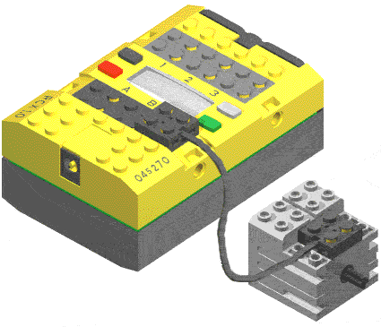
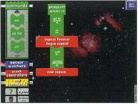
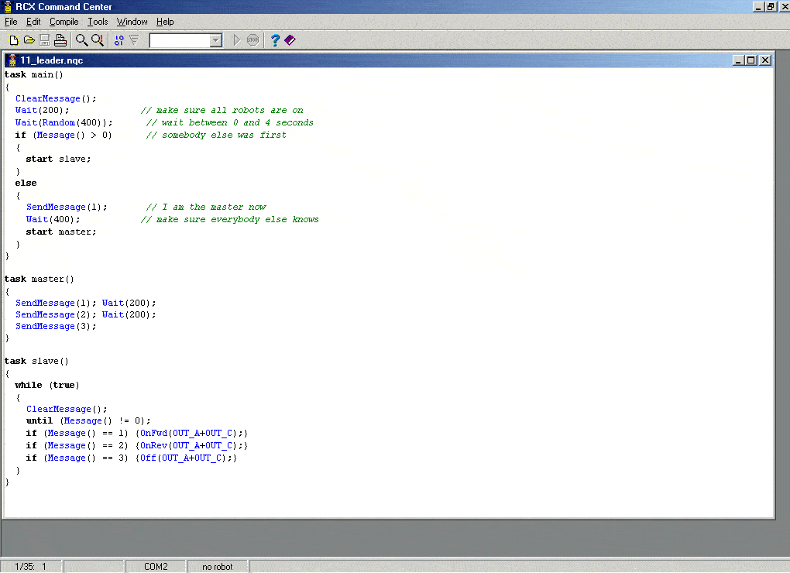
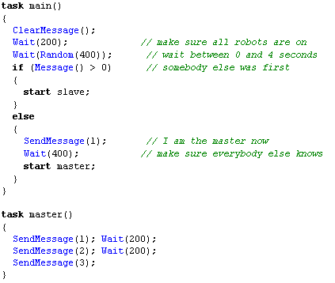
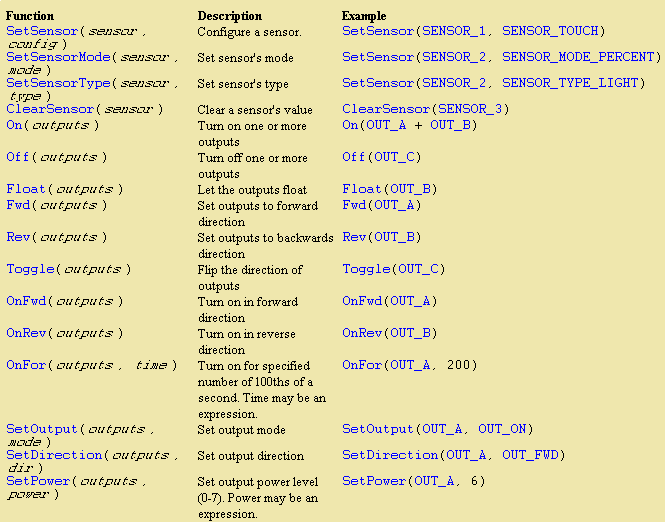

Développer pour le Lego RCX
Des blocs graphiques à la programmation en NQC (Not Quite C).
Introduction à la robotique

Le LEGO Mindstorms et son module RCX n'est pas seulement un jouet. C'est également un excellent outil pour s'initier à la robotique[cite: 54]. Certes, il est assez cher, mais en comparaison de certains robots vendus en kit et compte tenu de ses possibilités quasi illimitées, il est finalement assez bon marché ![cite: 54]
Avec la boite de base, le module RCX (microprocesseur) est livré avec deux moteurs, deux capteurs de contact et un capteur Infrarouge[cite: 54]. Le module communique avec le PC par son port de communication Infrarouge. De quoi faire des robots qui roulent, marchent, rampent et suivent une ligne...[cite: 54]
Programmation de base vs. NQC


Pour donner de "l'intelligence" à votre robot, vous utiliserez dans un premier temps le logiciel du CDROM. Ce logiciel de programmation par blocs graphiques est simple à utiliser. Les programmes sont transférés du PC au RCX par liaison Infrarouge[cite: 54].
Vous aurez sans doute envie par la suite de faire des programmes plus élaborés. Le module est programmable en langage C ou plus exactement en NQC (Not Quite C). Je vous recommande d'utiliser l'environnement RCX Command Center[cite: 54].
RCX Command Center intègre le compilateur NQC et permet d'éditer, de compiler, de transférer le programme et de connaître l'état du module RCX[cite: 54].
Exemples de code et fonctions
Le langage NQC est évidemment très orienté et adapté pour le RCX. Voici la structure d'un morceau de programme en NQC et quelques fonctions dédiées à la commande des moteurs et à la configuration des capteurs[cite: 54] :

